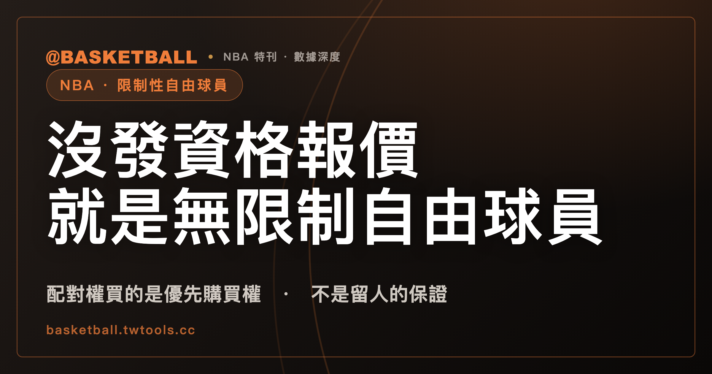

限制性自由球員的配對權從哪來：一般路徑下，原球隊沒發資格報價，符合資格的球員就是無限制自由球員
在 2023 NBA CBA 的一般路徑下，符合資格的球員要成為限制性自由球員（Restricted Free Agent），原球隊得先在期限內發出資格報價（Qualifying Offer）；沒發，他就是無限制自由球員。資格報價買到的是優先購買權（Right of First Refusal），不是留人的保證。

新手村｜制度入門・限制性自由球員
看 NBA 的休賽季新聞，會讀到這樣一串話：某位球員是限制性自由球員，別隊簽了一份報價單，原球隊有權配對。三個詞連在一起，很容易讀成「他是新秀，所以原隊可以搶回來」。
這個讀法漏掉一個動作。依 2023 NBA CBA（NBA 與球員工會的集體談判協議），球員符合資格之後，還要原球隊自己出手發一份資格報價；原球隊沒發，同一位球員就是無限制自由球員，誰都可以簽。
這篇要主張的是：限制性自由球員的配對權不是球員身上的標籤，而是原球隊用資格報價換來的一項權利；這項權利只保證原球隊有機會配對，不保證球員留下。讀完之後，你可以拿一組假設的球員與球隊，自己走一遍流程，判斷他是什麼身分、原球隊手上有哪些選項。
本文所有規則與日期都出自 2023 CBA 條文，文中不一一重複條號，來源列在文末。下文一律寫「2023 CBA」，不寫「現行」。
同樣是自由球員，為什麼有的原球隊還能配對別隊的報價？
因為兩種自由球員的定義，差在同一件事：原球隊有沒有優先購買權。
2023 CBA 把限制性自由球員（Restricted Free Agent，簡稱 RFA）定義為受原球隊優先購買權（Right of First Refusal）約束的 Veteran Free Agent。無限制自由球員（Unrestricted Free Agent，簡稱 UFA）則是不受球隊優先購買權約束的 Free Agent。優先購買權在球迷之間常被稱為配對權，這是慣用說法，不是規則書用語；規則書寫的是「行使優先購買權」，內文也用「配對一份報價單（Offer Sheet）」這樣的字眼。
差別放到球員身上，就是這樣：UFA 談好條件就能簽。RFA 談好他隊的條件之後，還得把條件交給原球隊，讓原球隊選擇要不要照同樣的條件把他留下。
那誰有資格成為 RFA？依 2023 CBA，資格分兩條路，兩條路上都要原球隊先動手。
第一條是第一輪新秀合約到期的球員。新秀合約（Rookie Scale Contract）的細節在選秀樂透入門有提，這裡只需要知道：球隊可以在第二個 Option Year 所涵蓋的球季結束後隔天起，到隨後 6 月 29 日東部時間下午 5:00 為止，對球員發資格報價。有發，球員在隨後的 7 月 1 日成為 RFA；沒發，他在同一個 7 月 1 日成為 UFA。
第二條是年資淺的一般球員。2023 CBA 寫的是（Option Year 未被行使的第一輪新秀除外）：合約最後一季結束後的 6 月 30 日，Years of Service（年資）為 3 年以下的 Veteran Free Agent，或者剛完成 Two-Way Contract 的球員，只要原球隊在同樣的 6 月 29 日東部時間下午 5:00 前發出資格報價，就是 RFA。剛完成雙向合約的球員，可以先看雙向合約入門。沒發，7 月 1 日成為 UFA。
「年資」在 2023 CBA 裡有自己的算法：球員在例行賽期間，只要有一天以上在 Active List 或 Inactive List 上，該季就記 1 年，另有不計入的例外。Veteran Free Agent 則是簽過球員合約、並把合約履行完畢的 Veteran（10-Day Contract 不算）。
還有一個第一輪新秀的例外要記住。如果球隊沒有在期限內行使新秀合約第一或第二個 Option Year，球員在第二或第三個球季之後直接成為 UFA，不會經過 RFA 這一站。
2023 CBA 另外還有兩條不經資格報價的路徑：一條是因反藥物規定被開除、之後復權的 First-Year Player，一條是球員因違反反規避條款而終止合約。本文不展開這兩條，下面談的是資格報價這條路。
資格報價買到的是優先購買權，不是留人的保證
球隊發了資格報價，球員就留下了嗎？2023 CBA 對資格報價的定義是：一份球隊簽署的 Uniform Player Contract 報價，期限一年。
球員收到之後，預設有到隨後 10 月 1 日的時間考慮，球隊可以延長，但延長也不得超過隨後的 3 月 1 日。2023 CBA 明寫球員可以在期限內接受這份報價。
比較容易被忽略的是球隊這一頭。2023 CBA 寫：資格報價在發出後，球隊可以在隨後 7 月 13 日之前的任何時間撤回。一旦撤回，球員立刻成為 UFA。所以資格報價是一張球隊自己握著、也可以自己放掉的票。
球隊沒撤回、球員也沒接受，接受期限過了之後呢？2023 CBA 寫：球隊的優先購買權繼續存在。也就是說，球員即使沒有簽下資格報價，原球隊仍然保有配對權。
配對權不會自動年年有效。2023 CBA 寫：RFA 到隨後 3 月 1 日仍沒有簽報價單，也沒有在該季結束前與原球隊簽約，原球隊可以在次年 6 月 29 日之前再發一次資格報價，重新主張優先購買權，之後每年都可以重複。另外，RFA 不得在資格報價所屬球季的 3 月 1 日之後，向原球隊遞交報價單。
再看一個反方向的規定：原球隊如果放棄優先購買權，球員立刻成為 UFA。放棄、撤回、沒發，三種走法的結果都一樣，球員在市場上不再受配對權約束。
這一節可以整理成三句：資格報價換來配對權；配對權不等於球員留下；RFA 到 3 月 1 日仍沒簽時，球隊要維持配對權，得在次年再發一次資格報價。
報價單送到之後，原球隊在期限內配對，簽下的是報價單的 Principal Terms
依 2023 CBA，將成為 RFA 的球員，從 Moratorium Period 第一天東部時間中午 12:01 起，就可以與原球隊以外的球隊簽報價單。Moratorium Period 的日期屬於休賽季時程，可以看NBA 聯盟指南裡的自由市場年曆。
報價單（Offer Sheet）的定義是：RFA 收到原球隊以外的球隊（CBA 稱 New Team）想接受的簽約報價時，交給原球隊的一份證明書，由球員與新球隊共同簽署。它有幾個基本條件，都出自 2023 CBA：
- 合約年限要超過一個球季（不含 Option Year）。如果原球隊同時發了資格報價與 Maximum Qualifying Offer，年限要超過兩個球季。
- 不能是 Two-Way Contract。
- 新球隊在簽署時要有 Room（薪資帽空間），報價單有效期間也要一直有。薪資帽的基本概念放在薪資帽入門。
- 同一時間，只能有一份由 RFA 簽署、且經球隊簽署的報價單有效。
報價單交到原球隊手上之後，時鐘就開始跑。2023 CBA 給的期限如下：
| 報價單送達原球隊的時間（東部時間） | 原球隊送出配對通知的期限（東部時間） |
|---|---|
| 當天中午 12:00 之前 | 隔天 11:59 p.m. |
| 當天中午 12:00 起（含） | 送達日之後第二天的 11:59 p.m. |
| 在 Moratorium Period 期間 | 該 Moratorium Period 結束後的 7 月 7 日 11:59 p.m. |
配對時要用什麼方式容納這筆薪水，2023 CBA 也有規定：依情形使用 Room、Veteran Free Agent Exception，或 Minimum Player Salary Exception 其中之一。這些屬於薪資帽細節，本文不展開。
期限內原球隊有兩種走法，結果不同。
配對：2023 CBA 寫，球員與原球隊視為簽下一份合約，內容是報價單所附 Uniform Player Contract 裡的 Principal Terms，不含 Principal Terms 以外的條款。Principal Terms 是 CBA 列舉的幾項，包括合約年限，以及新球隊將支付或借給球員的固定且指定的薪酬（簽約金、Current Base Compensation、Deferred Base Compensation 及其分期日期）。所以「配對」不等於「把報價單每一個條款照抄」，範圍是條文列出的那幾項。
不配對：原球隊沒在期限內配對，或書面表示不配對，2023 CBA 寫，球員與新球隊視為簽下報價單所附合約的全部條款。這時球員去新球隊，用的是新球隊當初開出的完整合約。
配對成立之後，這份合約一年內不得以任何方式修訂。
拿一組假設的球員自己走一遍
現在用一組假設的人物，把上面的規定串起來。以下人物與球隊都是假設，不是真實球員或球隊，日期也只用「當天」這類寫法，不對應任何一年。
假設球員 A 剛打完第一輪新秀合約的最後一季，原球隊叫 X，另一支球隊叫 Y。
先問第一個問題：X 在 6 月 29 日東部時間下午 5:00 前，有沒有對 A 發資格報價？
如果沒發，依 2023 CBA，A 在 7 月 1 日成為 UFA。X 沒有優先購買權，Y 開任何條件，A 談好就能簽，X 沒有配對的機會。
如果發了，A 在 7 月 1 日成為 RFA。接著 Y 想簽 A，前提是 Y 有足夠的 Room，並且開出符合條件的報價單：年限超過一個球季，而且不是雙向合約。A 與 Y 簽好報價單，交給 X。
假設報價單在東部時間某天上午 10:00 送到 X，而且不在 Moratorium Period 期間。查上面的表：中午 12:00 之前送達，X 的期限是隔天 11:59 p.m.。X 有兩個選擇：
- 配對：A 與 X 簽下報價單的 Principal Terms，A 留在 X。之後一年內，這份合約不能修訂；依 2023 CBA，X 未經 A 同意不能交易他，即使 A 同意，任何球隊也不能把他交易給報價單被配對的 Y。
- 不配對或期限過了：A 與 Y 簽下報價單的全部條款，A 去 Y。
走完這一遍，可以回頭檢查兩件事。第一，A 是 RFA 的前提，是 X 在期限前發了資格報價，光靠「A 剛打完新秀合約」還不夠。第二，X 就算發了資格報價，也可以在 7 月 13 日之前撤回，撤回之後 A 立刻成為 UFA。
常見問題
新秀合約到期的球員，就自動是限制性自由球員嗎？
不會自動。依 2023 CBA，第一輪新秀合約到期的球員，要原球隊在隨後 6 月 29 日東部時間下午 5:00 前發出資格報價，才會在 7 月 1 日成為限制性自由球員；沒發，他在 7 月 1 日成為無限制自由球員。另外，如果球隊沒有及時行使新秀合約第一或第二個 Option Year，球員在第二或第三個球季之後直接成為無限制自由球員。
限制性自由球員只能是新秀嗎？
不是。依 2023 CBA 第 XI 條，合約最後一季結束後的 6 月 30 日，Years of Service 為 3 年以下的 Veteran Free Agent，或剛完成 Two-Way Contract 的球員，只要原球隊在同年 6 月 29 日東部時間下午 5:00 前發出資格報價，也是限制性自由球員。Option Year 未被行使的第一輪新秀不適用這一條，他們直接成為無限制自由球員。
原球隊配對之後，這位球員可以被交易嗎？
依 2023 CBA，原球隊行使優先購買權之後一年內，未經球員同意不能交易他；即使球員同意，一年內任何球隊都不能把他交易給報價單被配對的那支球隊。配對成立的合約，一年內也不得以任何方式修訂。這是 2023 CBA 對配對後合約的限制，一年期滿之後的情形，本文沒有涵蓋。
球員可以接受資格報價嗎？
可以。依 2023 CBA，資格報價是球隊簽署的一年期報價，球員收到之後預設有到隨後 10 月 1 日的時間考慮，球隊可以延長，但接受期限不得超過隨後的 3 月 1 日。球隊也可以在隨後 7 月 13 日之前撤回資格報價，撤回之後球員立刻成為無限制自由球員。
資料來源
- NBA 與球員工會 2023 集體談判協議（Collective Bargaining Agreement，2023 年 7 月版）：Article I 第 1 節（Restricted Free Agent、Unrestricted Free Agent、Veteran Free Agent、Years of Service 的定義）；Article XI 第 1 節（資格報價的定義、期限）、第 4 節（資格報價與 RFA 資格、接受與撤回）、第 5 節（優先購買權、報價單、配對與不配對、配對後限制）；Article XIV 第 8 節、Article XXXIII 第 13 節（不經資格報價的兩條路徑）。
- 「配對權」「限制性自由球員」「資格報價」「報價單」為中文慣用說法，非規則書用語；Right of First Refusal、Offer Sheet、Qualifying Offer、Principal Terms 等詞以 CBA 英文原文為準。